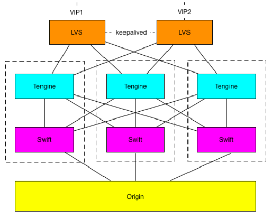
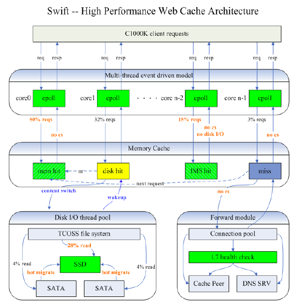

这是 Xu Ruochen 总结的通过DNS实现的CDN的一篇条理清晰的文章， 原文链接: CDN的原理以及其中的一些技术。
CDN，全称Content Delivery Network，主要作用是为源站减少访问压力的同时，为客户端提供更快速的内容响应。除此之外，CDN还能对源站进行安全防护。 其实真正为CDN付费的是源站，所以CDN的用户其实是源站，例如新浪微博，youku视频，淘宝网啊之类的。而客户端，是CDN的用户的用户。 所以CDN是夹在源站和源站的用户之间的，以下称客户端均指源站的用户。
工作原理
传统网站访问过程
要说CDN的工作原理，就得先说说Internet资源的访问过程。传统的来说，在浏览器访问网站应当有这么一些步骤：
- 在浏览器键入网址www.taobao.com
- 浏览器请求dns服务器，查询到www.taobao.com对应的IP
- 浏览器向服务器发起TCP连接
- 浏览器通过建立的TCP连接发送HTTP协议报文
- 服务器向浏览器发送页面内容
- 浏览器将页面展现出来
- 对于上面提到的第2步，其实还是有需要来更加详细的说明一下dns的解析过程，因为它是CDN能工作的基本条件。
对于上面提到的第2步，其实还是有需要来更加详细的说明一下dns的解析过程，因为它是CDN能工作的基本条件。
DNS工作过程
DNS的工作过程容易被人忽略，一般只知道DNS的输入是一个网址，输出的是一个IP，在这里我也正好给自己总结记录一下。 DNS的协议主要是基于UDP的，所以dns server的qps一般都是很惊人的，比web server（http是基于tcp的）的qps是高出几个量级的。有个基本概念就是dns的记录类型，常见的dns记录类型有A，AAAA，CNAME等。中A记录是域名到IPV4地址的；AAAA记录是域名到IPV6地址的；CNAME记录类似于查询过程中的转发，意思是你去问问这个人，他管这事。好的，下面继续说说DNS的工作过程。
- 在浏览器键入
www.taobao.com,其实真正dns协议里用到的是www.taobao.com.最后还有一个点，可能是因为美观等原因，一般都不显示 - 查询本地缓存（host文件或者是浏览器的缓存）中有没有该域名对应的记录，有的话就直接用了
- 向运营商的DNS服务器发起dns解析的请求，一般称运营商的DNS服务器为
local dns - local dns会查询本地的缓存，local dns设置的缓存时间是有讲究的，过长过短都不好。另外local dns的查询是运营商的事，这里面水很深，外部不可控
- local dns如果没有缓存，会把域名从右往左扫描，依次请求对应的服务器，例如对于域名
www.taobao.com.，先去问负责.的根域名服务器，就是传说中全球只有几台的那些服务器，他们会答复.com是谁管理的，然后local dns又去找管理.com的服务器（假设名字为S1），去问问taobao.com是谁管，一般来说，在S1查到的记录是一条cname记录（阿里毕竟大公司，自己管理自己旗下的域名），然后就转到了阿里自己的DNS服务器上来了，一般称之为权威服务器 - 权威服务器是阿里自己建的，然后根据公司内部的一些配置啊，调整啊，查到
www.taobao.com.对应的服务器是谁，返回一个IP地址 - local dns缓存这个IP地址，并且回复浏览器
- 浏览器和对应的IP地址的服务器简历TCP连接，发送HTTP报文
买过域名的朋友都知道，假如你在万网买了cstdlib.com，然后你想启用一个二级域名go.cstdlib.com，那么你要去万网的控制台（已经和阿里云合并）设置一条A记录的解析，将go.cstdlib.com指向你想要的IP。每次增加二级域名的过程都是这样子。那么，如果你知道了DNS的解析过程，你可以这么做：
- 在服务器D1上起一个dns server，作为cstdlib.com的dns权威服务器
- 在万网的控制台新增一条CNAME记录，将cstdlib.com的解析转到D1来
- D1想返回什么IP就返回什么IP
这样一来，一切尽在掌控，毕竟D1是你的，而且以后你再也不用去万网的控制台了，这就是自建DNS服务器。
CDN选择优质节点
回到正题，CDN如何为用户选择时延更小的源站。这次不以访问淘宝为例了，因为阿里有自己的CDN，要是以访问淘宝为例，容易混淆CDN的提供者和源站。 这次举例以新浪微博为源站，假设微博使用了阿里的CDN（并不是假设，新闻在这里），那么阿里CDN会告诉微博，你要我给你加速一张图片是吧，那你就把这个图片解析到我的服务器来（可以CNAME，也可以直接写阿里CDN的url），那么，阿里CDN的dns权威服务器，会收到这么一个解析请求，请告诉我，新浪微博的1.png的源站在哪。这时CDN系统就要大展身手了。
假设我们现在是阿里CDN的dns权威服务器，有人问我们新浪微博的1.png的源站在哪，那我会这么做：先看看问我的这个人IP是多少（回忆一下dns解析的过程，我们看到的应该是local dns的IP），然后根据这个IP查到他是哪里的，北京还是广州，上海还是深圳。如果是北京，那好，我就给你返回北京的源站的地址；如果是上海，那我就给你返回上海的源站的地址，这样就实现了就近访问。
在把IP地址对应到地理位置的过程中，需要用到IP库，阿里CDN的IP地址库贱贱的，因为阿里CDN的负责人叔度在ArchSummit架构师峰会上说，他们可以用淘宝的包裹记录来校准，真是机智。
当然，就近只是一个要考虑的因素之一，还有很多因素需要考虑的，例如网络成本，流量分布，源站负载等。这是个很复杂的过程，我只是举了一个直观的方面来说。
CDN减少源站压力
刚才说了CDN是如何选择优质节点的，那么对于客户端，算是有个交代了。所以接下来考虑怎么给源站一个交代：减小源站压力。如果每一个用户请求都让他直接去源站拿的话，那源站将会承受巨大的压力，所以要考虑为源站提供一个HTTP的缓存，通过提升缓存的命中率来减小源站的压力。
比如刚才第一个用户请求了1.png，那么CDN先把这张图片缓存（缓存简单可以认为是一个哈希表，key是url，value是response）起来，下次再有人要1.png，就直接返回给他，从而减少回源流量。
HTTP缓存服务器是一个很复杂的功能。下面还是贴一张叔度在ArchSummit架构师峰会上用到的PPT吧，来说一下这里面大概的技术，阿里的HTTP缓存服务器叫Swfit，正好和苹果的那个语言重名了。

图中是一个CDN节点，用户的请求从LVS（LVS是一个四层的负载均衡组件，作者是章文嵩博士，现任阿里云CTO. 现在到滴滴了）的入口来，先由LVS做一次4层的负载均衡，然后转到一台Tengine（阿里在nginx的基础上开发的服务器）上，Tengine做一致性hash，选择一台Swift（阿里使用的HTTP缓存服务器），然后Swift去做缓存回源。接下来仍然贴一张叔度在ArchSummit架构师峰会上用到的PPT，一起看看Swift的架构。

首先可以看到，Swift是一个多线程的程序，每个线程起一个epoll来充分发挥多核的处理能力。并且尽量减少线程间的上下文切换，一个请求尽量在一个线程处理。然后图里面还能看到内存缓存，SSD缓存，SATA缓存。据叔度说，Swift会有热点淘汰的机制，将热文件放在内存里，次热文件放在SSD上，最后才是SATA盘，然后会有热点淘汰和提升机制。
同时叔度在ArchSummit峰会上还提出，Tengine和Swift是通过Spdy协议来通信的，从而优化HTTP的效率。所以，CDN在技术上还是很有深度的，网络，IO，多线程，TCP/IP，HTTP这些后台常见的名词在这里面体现的淋漓尽致。
边边角角
其实在DNS查询过程有一个这样的问题，权威服务器接收请求的时候，只能得到local DNS的IP，并不知道client IP。这是个很蛋疼的东西，所以google提出了EDNS的协议，会带上client IP，但是其实不怎么实用，因为这相当于大家缓存DNS查询结果的时候多了一维client IP，一维数组变二维数组，简直是内存的灾难。所以，大家平常就别用8.8.8.8这样的DNS服务器了，不然别人以为你是在美国，然后用美国的源站和你通信，肯定慢成狗啊。
总结
总结一下CDN的工作原理：通过权威dns服务器来实现优质节点的选择，通过缓存来减少源站的压力。
推荐阅读
最后推荐一下阿里CDN的负责人叔度在ArchSummit上的演讲，把阿里CDN架构讲的很清楚。本文很多内容来自该演讲。链接在这里。